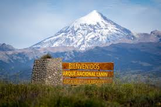
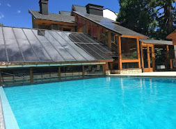
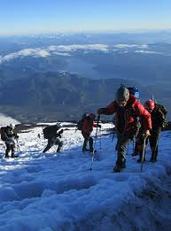
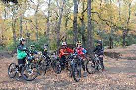

Entrada al parque: Las entradas al parque cuestan; Tarifa general $20.000, para residentes nacionales $ 7.000,para residentes provinciales $ 5.000 y para estudiantes $ 5.000

Hospedaje: El costo de una noche en una vivienda varia desde los $75.000 hasta los $170.000 para alternativas mas lujosas

Actividades recreativas: se realizan distintas actividades como senderismo y trekking, ascenso al volcan lanin, ciclismo, deportes náuticos, pesca deportiva, observacion de flora y fauna y excursiones lacustres.

Servicios: Los servicios de comida rondan los $15.000 por comida incluyendo bebida y para el transporte se recomienda venir con un vehiculo como un auto o una bicicleta con la cual podrás recorrer varios senderos.
